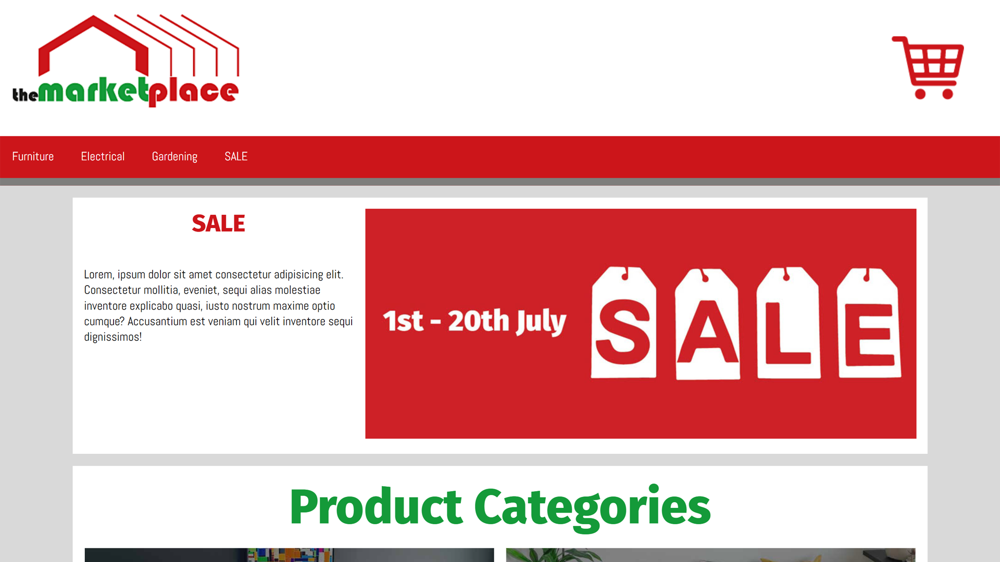
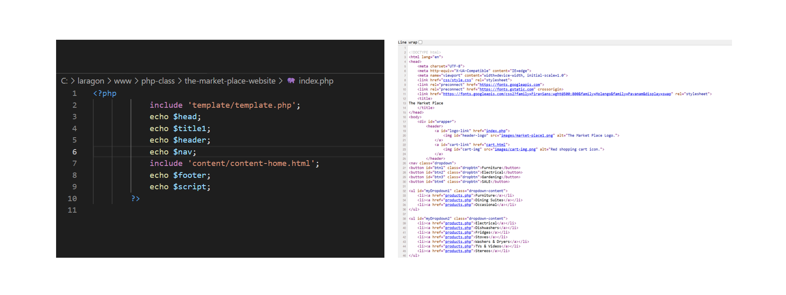

About Me
Hi, I’m Emily Drage, a jack of all trades (and a master of some…) with a passion for both visual arts and technology. I aim to build a broad knowledge base rather than focusing on a few specific skills, as I believe this makes me a better problem solver and a stronger asset in team environments.
For a long time, I saw art as a hobby, but working as an IT business support officer made me realize the creative potential in designing websites and applications. That’s when I started applying my artistic skills to UX and UI design, where I discovered I had a natural flair—particularly in user experience design.
I thrive in team settings where I can bounce ideas around, solve problems collaboratively, and be creative within clear guidelines (as odd as that may sound!). I love problem-solving, and I believe the best solutions come from working together with a team of experts.
Portfolio
Welcome to my web development portfolio. Here, you’ll find projects that I completed as part of earning my Certificate IV in Information Technology (Web Development) and Diploma of Information Technology (Front End Web Development).
In the future, I will also include any freelance work I take on, so check back for updates as my portfolio continues to grow.
Tafe Projects
Tafe Courses:
- ICT50220 Diploma of Information Technology (Front End Web Development)
- ICT40120 Certificate IV in Information Technology (Web Development)
Tafe Projects

Market Place
A three-part project that involved creating a website for a fictitious client.
Read More

Pet Project
A website created around a personal interest topic. This project utilized semantic HTML, CSS Grid, and some JavaScript.
Read More
Back-end Development
This was my first time using PHP.
Read More
CV
Please feel free to download my cv.
⋆｡°✩ View CV ✩°｡⋆
🫧 Download CV 🫧